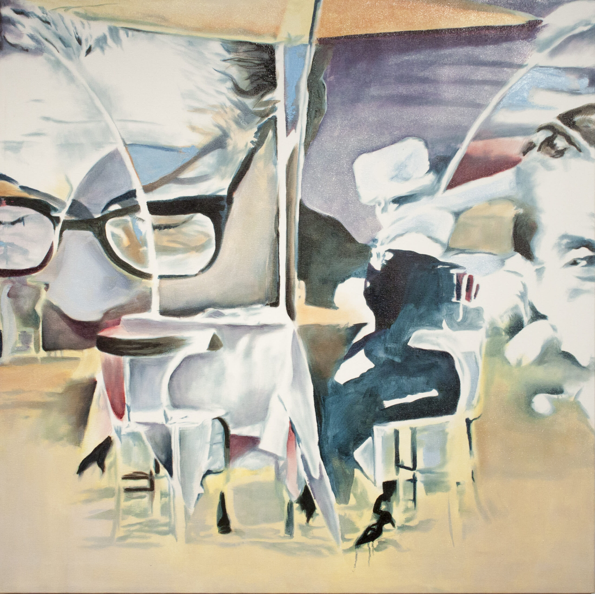
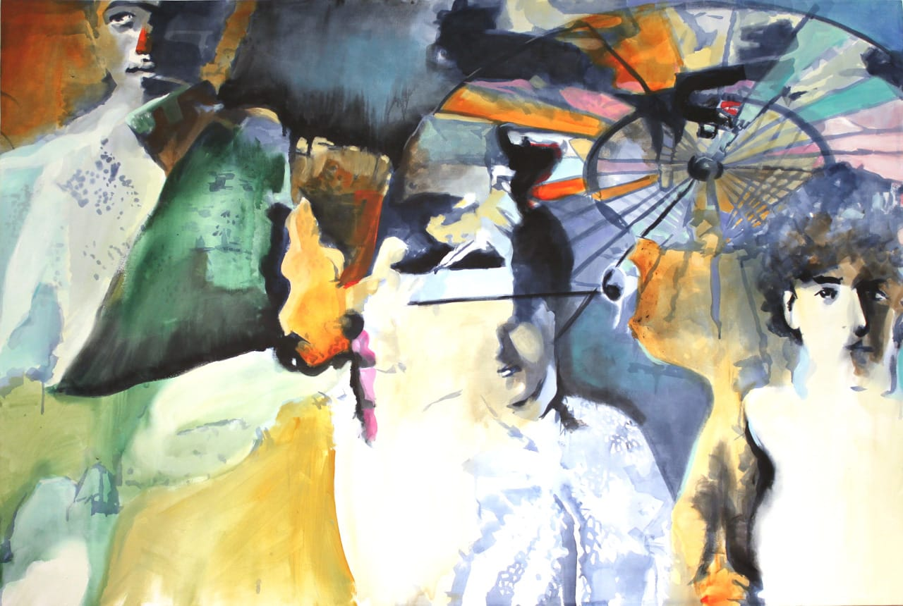

Interview with Jon Reischl: Memory, Perception, and Experience

Jon Reischl is a visual artist and designer specializing in mixed-media and oil painting. He has shown work locally in the Twin Cities and the greater metro area as well as regionally at venues throughout the Midwest.
A graduate of St. Paul’s College of Visual Arts (RIP), He works out of Rock 9 Art Studio, located in the heart of the Creative Enterprise Zone. Jon lives on St. Paul’s East Side with his lovely wife Debra and their trusty beagle.
Find more of Jon’s artwork at https://jonreischl.com/
On Instagram @jon_reischl_art
MPLSART.COM, Q & A with artist Jon Reischl (online print interview)
TPT: Twin Cities PBS, MN Originals (video interview)

The Rigors of a Convent Education
Oil on canvas, 32″ x 50″, 2023

Dispatch. oil on wood, 20″ x 20″, 2021

Eight-and-a-half 1963, oil on canvas, 40″ x 40″, 2015

Claqueurs, acrylic on canvas, 72″x 48″, 2014
Links related to the conversation:
The Conversation (website), The instability of memory: how your brain edits your recollections, February 4, 2014
The Web Accessibility Initiative (WCAG) Color Criteria:
Web Accessibility in Mind (WebAIM) Contrast Checker
A11Y Color Blindness Empathy Test (Chrome Plugin)
Mayo Clinic Color Blindness webpage